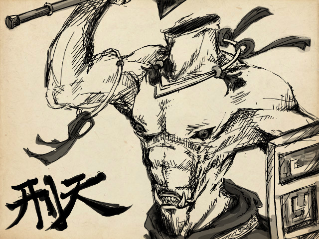

刑天舞干戚的神话故事：刑天舞干戚的意思是什么？. 刑天舞干戚是古代 汉族 神话传说之一，刑天是《 山海经 ·海外西经》中的人物，原是一个无名的巨人，因和 黄帝 争神座，被黄帝砍掉了脑袋。. “刑天”这个名字的意思就是：天者，颠也;刑者，戮也。. 天就是天帝，“刑天”就表示誓戮天帝以复仇。. 接下来随着小编一起来看看刑天舞干戚的神话故事! 刑天出生在南方，成长为一名巨神后，被 炎帝 相中，做了炎帝的属臣。. 身材巨大的刑天，不仅勇武骠 (biao)悍 (han)，而且还有较高的音乐素养和才华。. 他一直跟随着炎帝，帮助炎帝治理国家，教导人民从事生产。. 为表示他对炎帝慈善的性格和开明的国政的敬佩，刑天为炎帝作了一组歌曲，以赞美炎帝的功绩和德政。
